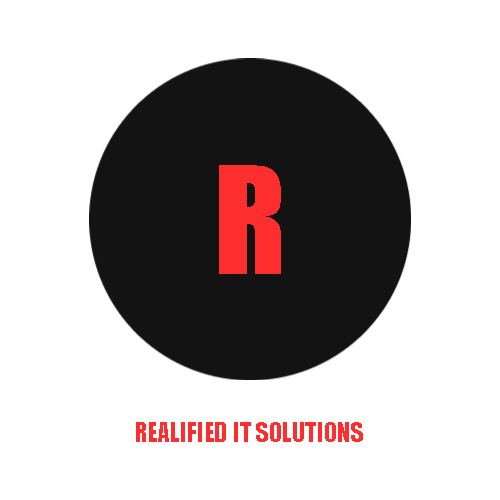

A Philippine-owned company named Realified IT Services was founded in 2020, with the goal to make services easier for companies who really need their employers ready to do their work with a high-skill level.
Realified IT Services manages your facilities and support and your organization or company can focus on what needs to be planned and be readied to the core.
Our company has delivered high-quality products ever since then, at an affordable price for your company to rise up against competitors.
With over 9000 seats in the country and worldwide, Realified IT Solutions has come to be a leader.
